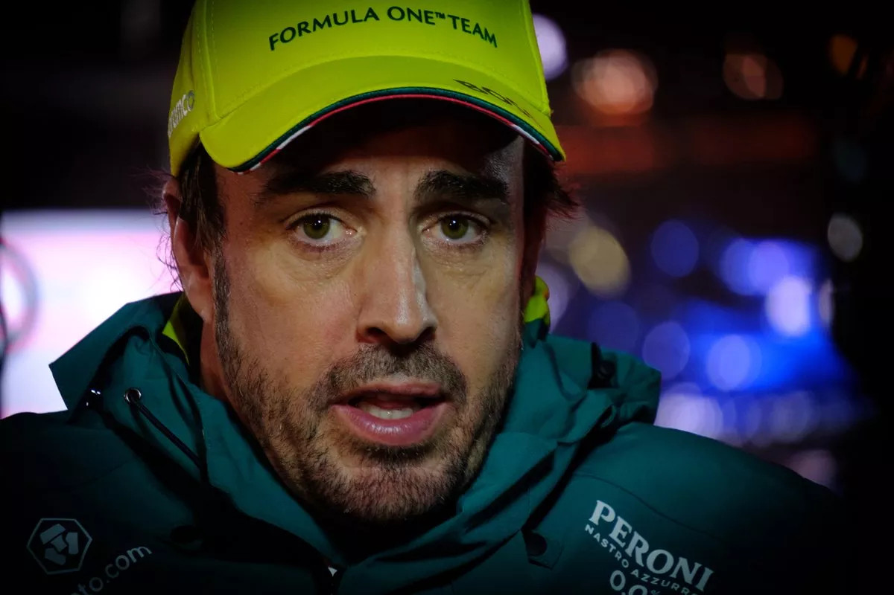

Fernando Alonso Díaz nació el 29 de julio de 1981 en Oviedo, Asturias, España. Desde muy joven, mostró un gran interés y habilidad para las carreras de automóviles. A los tres años, recibió su primer kart como regalo de Navidad, y desde entonces, su pasión por el automovilismo solo creció.
A los ocho años, Alonso comenzó a competir en karting, demostrando un talento natural que lo llevó rápidamente a destacar en el deporte. Ganó varios campeonatos locales y nacionales en España, mostrando su habilidad y dedicación en cada carrera.
Su talento no pasó desapercibido, y a los 17 años, Alonso fue seleccionado para un programa de desarrollo de jóvenes pilotos por parte de Renault. Este fue un paso crucial en su carrera, ya que le proporcionó la oportunidad de avanzar hacia las categorías superiores del automovilismo.
En 1999, Alonso ganó el Campeonato de España de Fórmula Nissan, impresionando a los observadores con su velocidad y habilidad en la pista. Este éxito lo llevó a dar el salto a la Fórmula 1, debutando con el equipo Minardi en 2001.
A pesar de las limitaciones del equipo Minardi, Alonso impresionó con su rendimiento y atrajo la atención de equipos más grandes. En 2003, firmó con Renault, donde comenzaría a escribir su leyenda en la Fórmula 1.
En 2005, Alonso se convirtió en el campeón del mundo más joven en la historia de la Fórmula 1, superando a Michael Schumacher y rompiendo el dominio de Ferrari. Repitió su éxito al ganar el campeonato nuevamente en 2006, consolidando su posición como uno de los mejores pilotos de su generación.
Después de su tiempo en Renault, Alonso compitió para equipos como McLaren y Ferrari, acumulando victorias y podios a lo largo de su carrera. Su estilo agresivo de conducción y su capacidad para adaptarse a diferentes situaciones lo convirtieron en un piloto muy respetado en el paddock de la Fórmula 1.
Fuera de la Fórmula 1, Alonso ha buscado nuevos desafíos en otras disciplinas del automovilismo. Compitió en las 24 Horas de Le Mans, donde logró la victoria en dos ocasiones, así como en el Rally Dakar y las 500 Millas de Indianápolis.
En 2018, Alonso anunció su retiro de la Fórmula 1, pero su pasión por la competición lo llevó a regresar al deporte en 2021, firmando con el equipo Alpine F1 Team. Su regreso fue recibido con entusiasmo por los fanáticos de todo el mundo, ansiosos por verlo competir una vez más en la máxima categoría del automovilismo.
En 2023 firmó por Aston Martin, realizando una muy buena temporada, que le sirvió como previa para en el 2024 ganar su tercer mundial a sus 43 años.
Además de su éxito en las pistas, Alonso es conocido por su carisma y su compromiso con la excelencia. Su determinación y dedicación lo han convertido en un verdadero ícono del automovilismo, inspirando a pilotos de todas las generaciones con su pasión por la competición y su búsqueda constante de la grandeza.